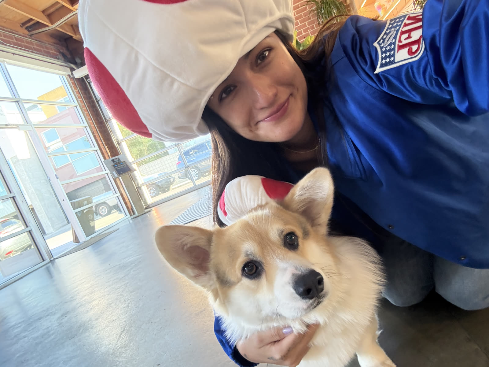
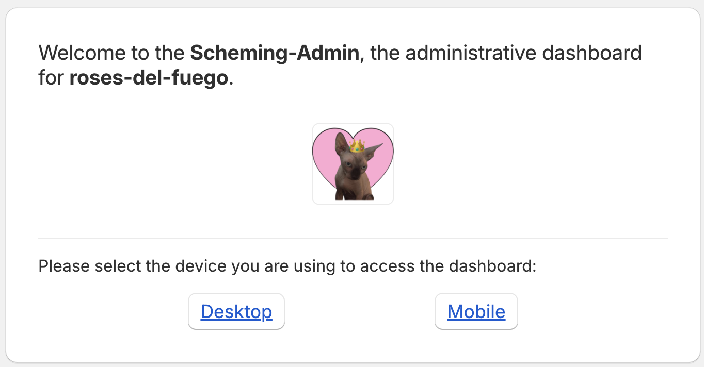
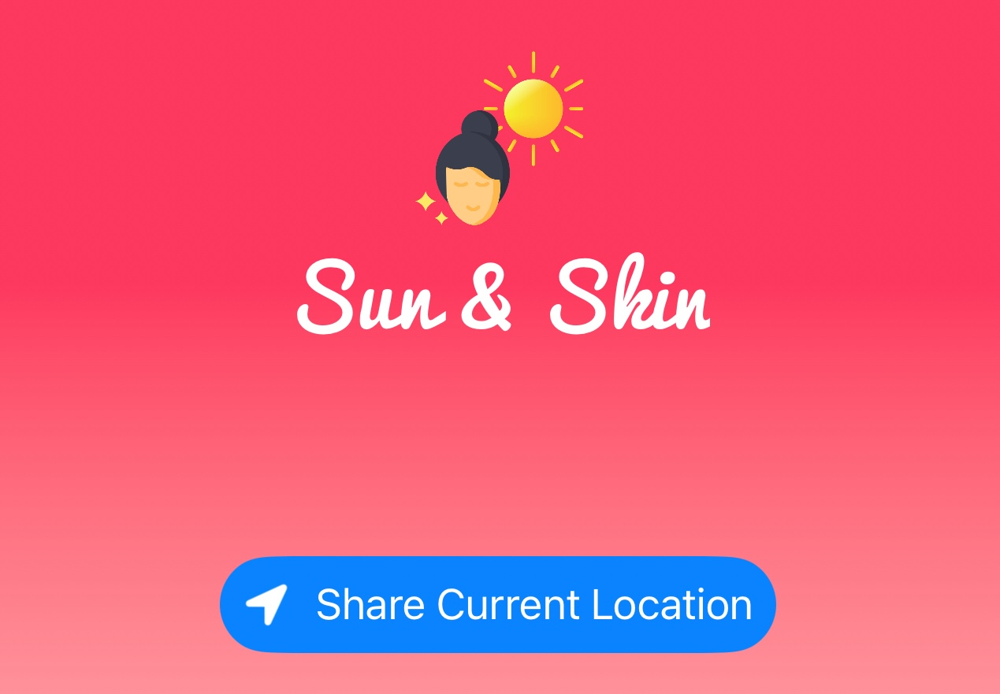
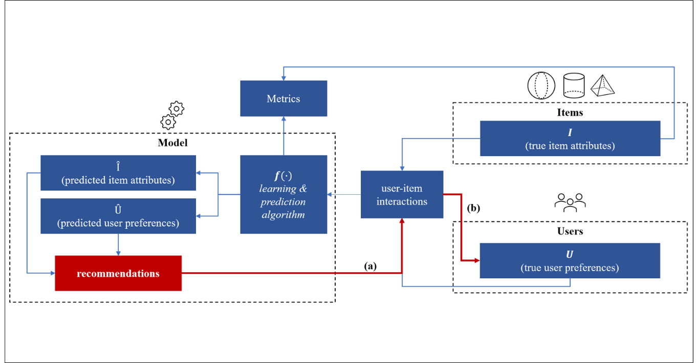
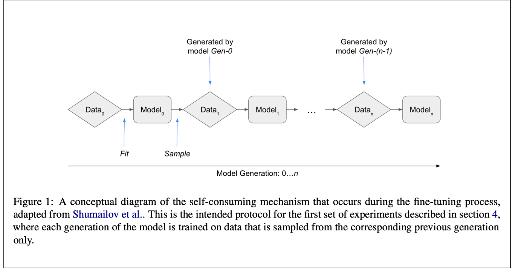

Agentic AI platforms, multi-agent orchestration, MCP tooling, durable async workflows, secure integrations, and enterprise access control.
Software engineer
Building enterprise AI automation systems.
I'm Madison, a senior software engineer focused on agentic AI systems, orchestration infrastructure, secure multi-tenant platforms, and full-stack product engineering.

About
I build production systems for enterprise AI automation: multi-agent orchestration, durable workflow execution, native integrations, permission-aware agent runtimes, and analytics surfaces for complex AI products.
Senior Software Engineer at Kindo AI, with an M.S. in Computer Science from Columbia University focused on machine learning and dual undergraduate degrees from UCLA.
Previously built custom Shopify operational software for Roses Del Fuego and machine learning models for connected vehicle behavior at Ford.
Selected Work
A mix of production engineering, freelance product development, and research projects across agent infrastructure, e-commerce operations, recommender systems, and language models.
Kindo AI
Senior engineering work on enterprise AI automation: multi-agent orchestration, durable workflow execution, agent versioning, scheduled agents, native integrations, secure credential handling, and usage analytics.

The Scheming Admin
Embedded Shopify admin dashboard for a flower company, with custom order metadata, exports, print workflows, webhooks, and deployment on Fly.io.

Sun & Skin
SwiftUI weather app concept focused on UV forecasts, sunscreen reapplication guidance, and opt-in reminders for safer sun protection habits.

